Introduction
The following thesis aims to investigate the role of creativity within the creative process. Since the creative process is for me the most exciting area of Graphic Design (I will explain later on the reason of my fascination) it became clear, that the subject which I would like to approach for my final project will deal with the creative process. Within the big scope of what the creative process includes, I would like to focus particularly on the role of creativity: what does "creativity" exactly mean, and how does it work? Where does creativity take place in the creative process? How can ideas influence creativity to discover new ways of working? But more importantly; How can creativity lead to unexpected discoveries?
I always had a fascination for unexpected discoveries happening in the creative process. The process referring to the process of making is the assembling, arranging, associating, patterning,… and moreover the initiation of actions and proceedings towards a result. Many designers while creating a design, affirm that it is not about process but about the final result, in the other hand few designers affirm the opposite. Though it is impossible to weigh these two against each other. In fact, without process there will be no result; and without a result in mind, it will be impossible to endure the process. They are like the two sides of the same coin: impossible to separate. Coming back to the reason of my fascination, I believe there is no righter or wronger approach while creating a design. In fact, it doesn’t really matter what can possibly happen during the creative process, since the creative process is the place where every idea gets born, where every possibility can be explore. It's the place where discoveries can be made.
The present paper finds its basis structure from The Art of Thought by Graham Wallas (1858-1932), English social psychologist and London School of Economics co-founder, which in 1926 wrote an insightful theory outlining the four stages of the creative process. I was inspired by Graham's theory which is based both on his own empirical observations and on the accounts of famous inventors and polymaths. In his theory, Wallas outlines four stages of the creative process — preparation, incubation, illumination, and verification. For this research paper, I will try to tackle each of the four stages in order to understand and answer my research question. Each stage is underlined by sub-categories which attempt to reinforce the subject better.
I.PREPARATION
Research Method
The first stage is the preparation stage. In this one, the problem is investigated in all directions as the thinker readies the mental soil for the sowing of the seeds. It’s the collection of intellectual resources, research which will help to construct new ideas. It is a fully conscious stage and involve research method and design method. As well it is an exploration phase where the maximum should be explored. Wallas writes:"The educated man has, again, learnt, and can, in the Preparation stage, voluntarily or habitually follow out, rules as to the order in which he shall direct his attention to successive elements." |1|
There are too many ways to classify research, and types of research. But, in the broadest sense of the word, the definition of "research includes any gathering of data, information and facts for the advancement of knowledge."|2|Another definition which might emphasize the importance of research: "A studious inquiry or examination; especially investigation or experimentation aimed at the discovery and interpretation of facts".|3| Indeed, the goal of the research process is to produce new knowledge or deepen understanding of a topic or issue. Furthermore, I believe that in research methodologies, designers, artists or craftspersons will seek intuition besides objective knowledge. I will say that research methodology in design is something which varies from a person to another. One might be subjective while the other objective. One might investigate every possibility (e.g gathering data and linked databases, investigate contextual research, technical research, …) while the other might focus on one thing only. Research has to do with who you are as a designer; thought great design is built on good research.
Let's take the example of History,( a typeface made) by Peter Bilak. In the article, The history of history, Peter Bilak reflects on the process of creating this skeletal system in which different styles are imposed on a Roman capital base. His research method illustrate experiments, as well as inspiration sources such as 'polyhistorical' model of Milan Kundera’s Immortality which provided him the theoretical foundation of the project. This way the typeface mixes personalities of the past and present, describing an imaginary dialogue between the German poet Goethe (1749-1832) and the American novelist Hemingway (1899-1961).
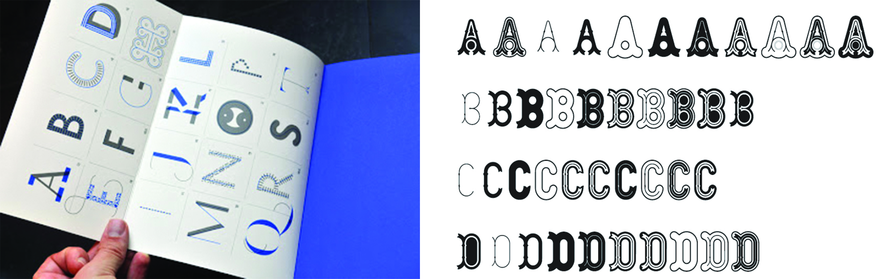Design method
Design methods have influenced design practice and design education. A good example to be mentioned would be 'The Swiss Design', sometimes also called 'International Typographic Style', who emerged during the post-World War II. This particular style was seeking for simplicity and believed aesthetic beauty arose out of the purpose of the thing being designed. Aesthetic beauty wasn’t itself the purpose. Instead, Ernst Keller (1891-1968) professor at the Zurich School of the Applied Arts (Kunstgewerbeschule) did not teach a specific style to his students. He rather taught a philosophy of style that dictated "The solution to the design problem should emerge from its content."|4| Designers were seen as communicators, not artists. This design method begins with a mathematical grid because a grid is the most legible and harmonious means for structuring information. The text is then applied, most often aligned flush left, ragged right. Fonts chosen for the text are sans serif, a type style believed to "express the spirit of a more progressive age"|5| by early designers in the movement.
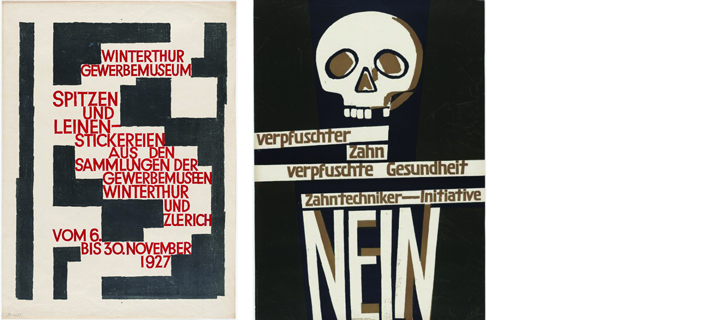Objective photography is another design element meant to present information clearly, and without any of the persuading influences of propaganda or commercial advertising. At that time, Swiss artists believed that design should be grounded in rational universal principles, discovered through a scientific approach. The ideal of design was to achieve clarity and order and they saw no room for eccentricity or personal expression. Design was something socially worthwhile and a serious profession to pursue. Their principles were communication through objective simplicity, in other words: a universally understood visual language. Swiss design was clean and free from ornamentation. They attempted to remove all that was unnecessary and emphasize only the necessary. It’s a style of design that favors minimalism.
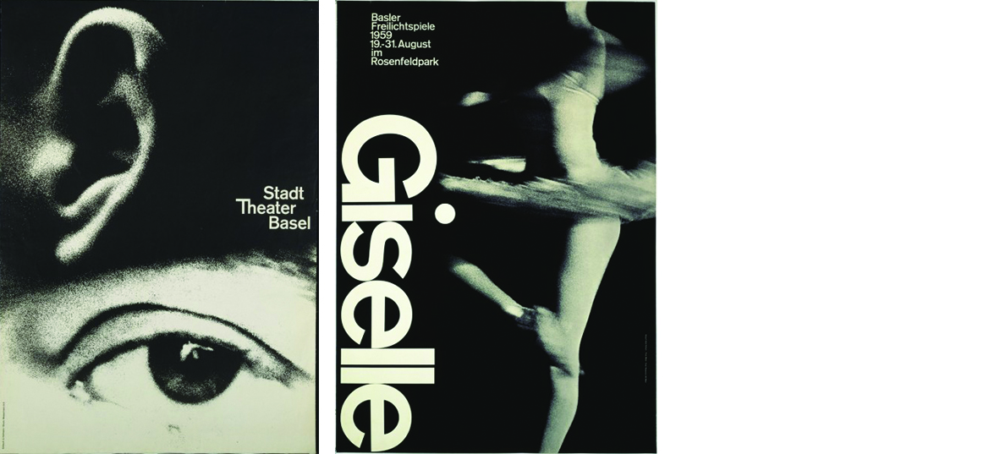Design methods took advantage of the design community by helping to create introductions that would never have happened if traditional professions remained stable. Design has been by nature an interloper activity, with individuals that have crossed disciplines to explore and discover. The challenge is to transform individual experiences, frameworks and perspectives into a shared, understandable, and, most importantly, a transmittable area of knowledge.
I would like to mention a quote from John Chris Jones(1927). To my eyes it reflects the work of the typeface History, in which Peter Bilak focused on the creative process rather than its market potential."Methodology should not be a fixed track to a fixed destination, but a conversation about everything that could be made to happen. The language of the conversation must bridge the logical gap between past and future, but in doing so it should not limit the variety of possible futures that are discussed nor should it force the choice of a future that is unfree."|6| John Chris Jones
where process meets method
When process and method are discussed, they tend to be used interchangeably. However, while they are two sides of the same coin, they are different. Process (lat. processes–movement) is a naturally occurring or designed sequence of operations or events over time which produce desired outcomes. Process contains a series of actions, events, mechanisms, or steps, which contain methods. Method is a way of doing something, especially a systematic way through an orderly arrangement of specific techniques. Each method has a process.
Design methods are concerned with the "how" and defining "when" things happen, and in what desired order. Design implement so much tools and techniques that there are many variables that affect outcomes since logic and intuition interplay with one another. Two people can, therefore, use the same method and arrive at different outcomes.
I would like to illustrate the work of Hans Hollein (1934 -2014), Man TransForms. In the book 'Graphic Design: Now in Production', Jonathan Puckey explains "Instead of collectively agreeing to the same streamlined tools sold to us by large software companies, we need to relaim the personal relationship we used to have with our tools. We need to reintroduce interesting points of friction in our highly optimized software. We must learn to create tools our selves. After all, the computer is exactly that: a tool for creating tools."|7|
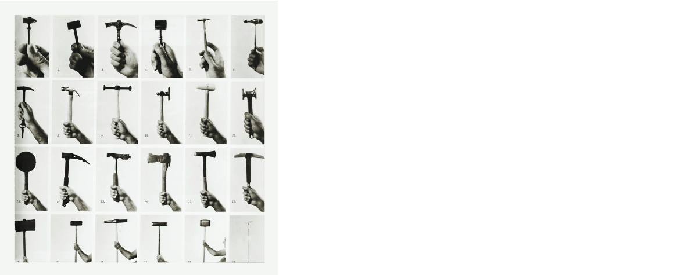By introducing what Jonathan Puckey said by creating tools our selves, I would to relate to the work of Karl Nawrot which uses the same technique to create evolving shapes, all his work go trough the same process of assisted-drawing. Karl Nawrot creates his own tools which can be anything from ink stamps to circular record templates and geometrical stencils. He uses these tools and devices to investigate and explore the possibilities of shapes and patterns and to make type experiments.
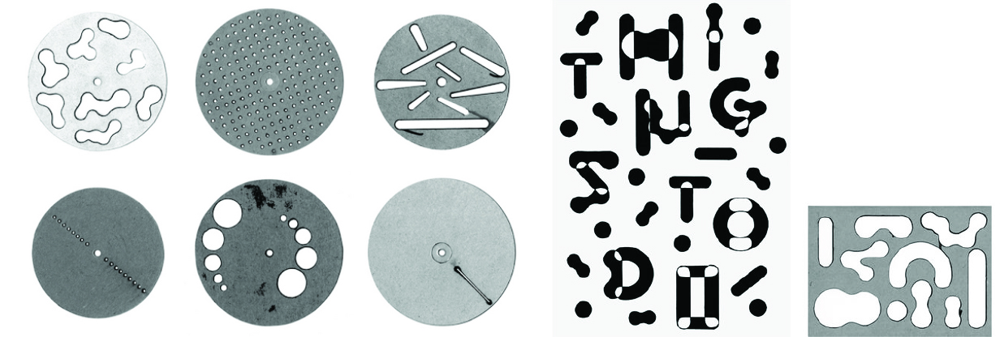Exploring new design method
Donald Alan Schön (1930-1966) was a philosopher who developed the concept of reflective practice and contributed significantly to the theory of organizational learning. In 1983, Schön saw traditional professions with stable knowledge bases, such as law and medicine, becoming unstable due to outdated notions of 'technical-rationality' as the grounding of professional knowledge. Practitioners were able to describe how they 'think on their feet', and how they make use of a standard set of frameworks and techniques. Schön foresaw the increasing instability of traditional knowledge and how to achieve it. This is in line with the original founders of design methods who wanted to break with an unimaginative and static technical society and unify exploration, collaboration and intuition. Having said this three last word, I had to relate to the work of Conditional Design Workbook which self combine elements to new design method.
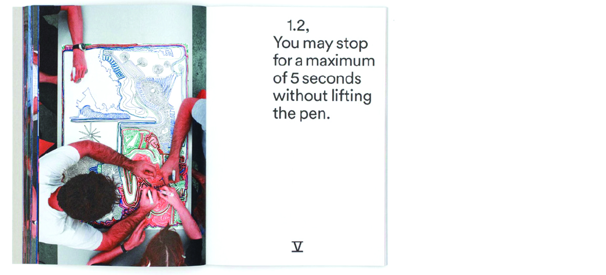II.INCUBATION
The second stage, the incubation is the phase of a gestational period of unconscious processing. There is much to be said in favour of laying a work aside to mature; for one thing it gives the judgment time to operate; the mind is able to return to the work from time to time with a fresh outlook; and check it from many different angles. I personally like to see the incubation phase as a big moodboard of ideas. Ideas which might eventually give new ideas, but during the incubation phase, each figure is set aside. Like this wall of Karel Martens studio.
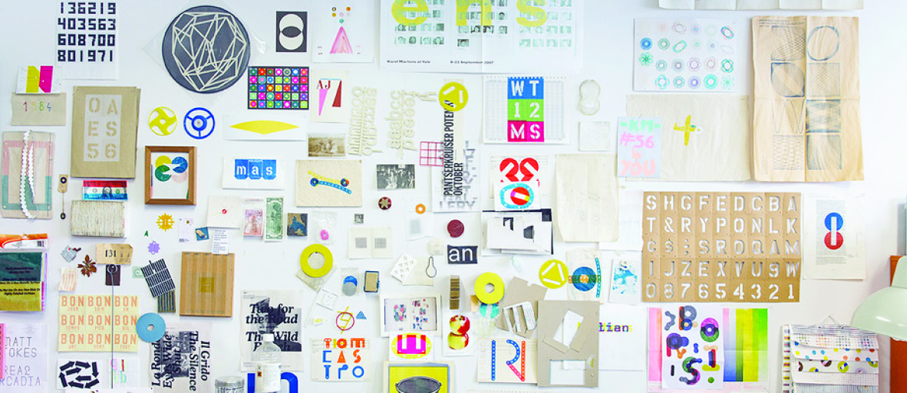It follows also that if new ideas are to be set aside to develop and newly finished works left to 'mature' there must be several things on hand at the same time in various stages of development. The continuity of attention is purposely shorted and interrupted partly on account of the rest this gives. Wallas wrote: "Voluntary abstention from conscious thought on any problem may, itself, take two forms: the period of abstention may be spent either in conscious mental work on other problems, or in a relaxation from all conscious mental work. The first kind of Incubation economizes time, and is therefore often the better."|8|
The role of idea
In the text "The Use of Poetry and the Use of Criticism" T. S. Eliot (1888-1965), explores theories of how creativity works, by taking a curious look at how physical illness brings a near-mystical quality of poetry. In this text the two key elements of creativity are the presence of an incubation period when unconscious processing of existing ideas takes place, and the removal of habitual inhibitions, or something John Keats (1795-1821) has termed 'negative capability'. This term characterise a capacity of those capable of creative process, a capacity that negates intellectual pursuit of answers. It has recently been appropriated by philosopher and social theorist Roberto Mangabeira Unger (1947) to comment on human nature and to explain how human beings innovate and resist within confining social contexts, rigid social divisions and hierarchies, and to transcend and revise their contexts.
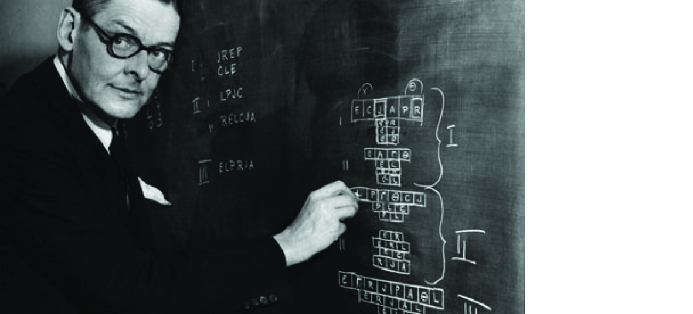In 1945, French mathematician Jacques Hadamard (1865 -1963) set out to explore how mathematicians invent ideas in what would become The Mathematician’s Mind: The Psychology of Invention in the Mathematical Field, introduces the process of discovery, using both his own experience and first-hand accounts by such celebrated scientists as Claude Lévi-Strauss (1908-2009) and Albert Einstein (1879-1955). But what Hadamard uncovered in the process of writing his treatise were the general psychological pillars of all invention and the inner workings of the creative mind, whatever discipline it is applied to. In staging the scene of his investigation, Hadamard quotes a letter from Mozart in which the legendary composer details his ideation and editing process, touching on some of the most universal principles of the creative experience long before contemporary psychology demonstrated them. Lewis Carroll (1832-1898) turns to a concept which has been expressed by many famous creator — the power of unconscious processing in productive work. French polymath Henri Poincaré (1854-1912) refer it to the vital workings of the subliminal self and T. S. Eliot argued it allowed for "idea incubation". Carroll (1832-1898), too, speaks to its power: "I would recommend anyone, who has to devote several hours together to one subject of thought, to try the effect of such a break, say once an hour, leaving off for five minutes only each time, but taking care to throw the mind absolutely ‘out of gear’ for those five minutes, and to turn it entirely to other subjects. It is astonishing what an amount of impetus and elasticity the mind recovers during those short periods of rest."|9|
Mental mastication
Carroll then turns to the "mastication" portion of the process, in which it make sense of what has been ingested, and stresses the importance of cataloging new ideas. As well, Carroll affirm connection-making as the key to effective thought. Mentionning 'connection-making' in the context of creative process, I would like to mention the work of Blackout poem by Austin Kleon. In TED talkshow, 'Steal Like An Artist', Kleon explains how the idea of the blackout poem comes from. I noticed in the first sentence of his article "Every morning I try to pick up a newspaper and a Sharpie marker, and I make one of my newspaper blackout poems". |10| The word 'every morning' and 'newspaper' which both encapsulate time, reminds me that the outcome of this poem will always follow the same method, but will be generated differently, for example by the layout of the newspaper, the content of the newspaper, etc...
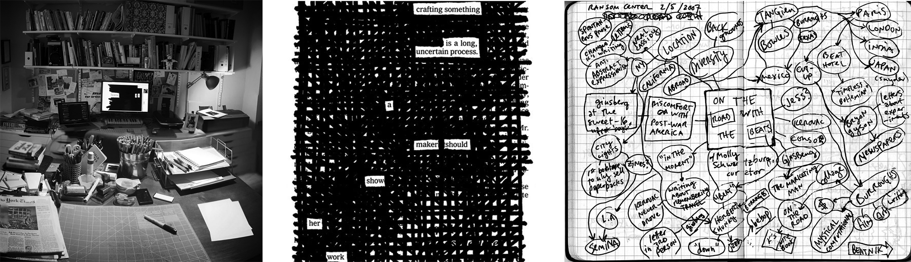III.ILLUMINATION
The illumination phase can be seen as the chance-opportunism phase like serendipity favorising scientific discovery. Supporting Henri Poincaré’s (1854-1912) insistence on invention as choice and George Lois’s (1931) conception of creativity as discovery, Rosamund Harding writes: "The true novelist, poet, musician, or artist is really a discoverer. Ideas — the theme of a plot, a poem, a picture, a theme of music — come to him as a gift. The idea, ‘the seed-corn’ as Brahms called it, he allows to develop naturally. There may come a point where it branches in one or many directions; he is free at this point to follow one or other. And it is here and here only that the judgment or choice of the true artist may legitimately be exercised. In fact the artist is in much the same position as a gardener growing prize rose trees, who in order to produce beautiful roses lops off unwanted shoots and suckers."|11|
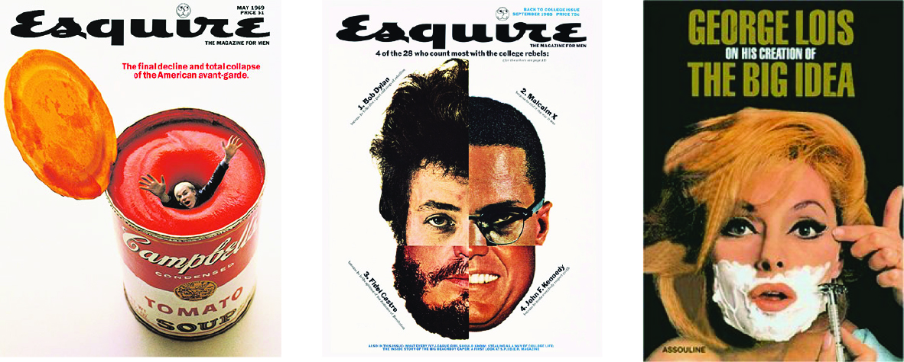In the interview 'On Creativity' George Lois (1931), legendary art director discuss the way he discoveres ideas within the contemporary culture. He says: "I don’t think I create anything. I’m really serious — I discover the ideas."|12| Which leads me to the following chapter.
Unexpected Discovery
"Only those who will risk going too far can possibly find out how far one can go."|13|
A good maxim for any researcher is 'look out for the unexpected', I believe, we, as graphic designer are researchers too. Which means this maxim applies to graphic design fields. I will name Jerome Bruner (1915) which considered which disposition is most fruitful to the art of discovery:"Several activities and attitudes … appear to go with inquiry and research. These have to do with the process of trying to find out something and, though their presence is no guarantee that the product will be a great discovery, their absence is likely to lead to awkwardness or aridity or confusion."|14|
Bruner illustrates those attitudes with what is perhaps the most insightful lens on problem-solving ever crafted — the English philosopher Thomas Dewar Weldon’s (1896-1958) distinction between difficulties, puzzles, and problems. Bruner explains:"We solve a problem or make a discovery when we impose a puzzle form on a difficulty to convert it into a problem that can be solved in such a way that it gets us where we want to be. That is to say, we recast the difficulty into a form that we know how to work with — then we work it. Much of what we speak of as discovery consists of knowing how to impose a workable kind of form on various kinds of difficulties. A small but crucial part of discovery of the highest order is to invent and develop effective models or puzzle forms. It is in this area that they truly powerful mind shines."|15| Along these lines Einstein (1879-1955) himself brought out: "There is no logical way to the discovery of these elemental laws. There is only the way of intuition, which is helped by a feeling for the order lying behind the appearance."
Intuition
Intuition is a phenomenon of the mind, describing the ability to acquire knowledge without inference or the use of reason. I find difficult to define how intuition exactly works, it might vary from a person to another. Once the Hungarian photographer Brassaï (1899 -1984) asked Picasso (1881-1973) whether his ideas come to him by chance or by intuition, Picasso slips the following answer:"I don’t have a clue. Ideas are simply starting points. I can rarely set them down as they come to my mind. As soon as I start to work, others well up in my pen. To know what you’re going to draw, you have to begin drawing… When I find myself facing a blank page, that’s always going through my head. What I capture in spite of myself interests me more than my own ideas."|16|
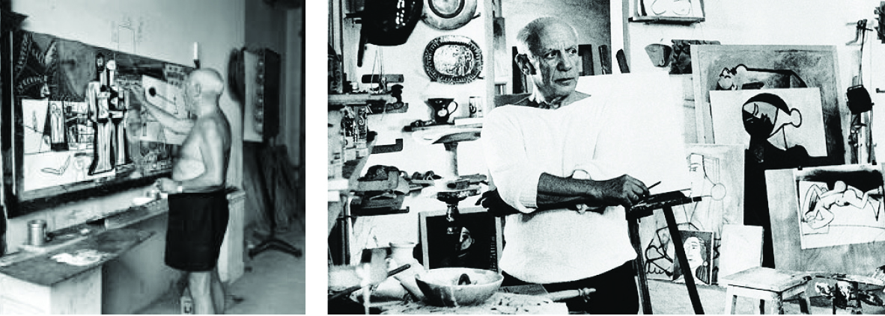Imagination
In the 1878 book, Human, All Too Human: A Book for Free Spirits, Nietzsche observed:"In reality, the imagination of the good artist or thinker produces continuously good, mediocre or bad things, but his judgment, trained and sharpened to a fine point, rejects, selects, connects… All great artists and thinkers are great workers, indefatigable not only in inventing, but also in rejecting, sifting, transforming, ordering."|17|
I like to think that intuition and imagination consists in linking up ideas whose connection was never suspected. For example, in the work of Erwin Wurm (1954), The One minute Sculpture — in which he poses himself or his models in unexpected relationships with everyday objects close at hand. He tells about his work:"I am interested in the everyday life. All the materials that surrounded me could be useful, as well as the objects, topics involved in contemporary society. My work speaks about the whole entity of a human being."|18| Wurm's work is being inspired by what surrounds him and make connection between physical, spiritual, psychological and political.
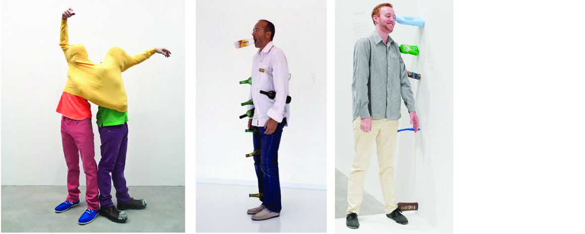Unknown Territory
The great French physiologist Claude Bernard (1813-1878) once said "Those who do not know the torment of the unknown cannot have the joy of discovery." In this chapter I would like to discuss two terms, the one of experimentation and the other of serendipity.
Experimentation
"The true method of knowledge is experiment." – William Blake At the Academy, students have at least once experimented. We often hear during presentation 'I was just experimenting' to explain a design choice. I can’t remember when I started experimenting! Was it before the Academy? Or maybe it started with this class where the only advice from the teacher was 'go and experiment'. Loved it. I wouldn’t know how or where to start, but I would just do something, see what happen; do something else, see what happen… and the process goes on and on. The process — and that might be explaining the reason why I have such an attraction for experiment in general. The fact is, when you experiment, you don’t expect — as well my fascination might come from the surprises and discoveries. Experimenting means being curious, believing you can make something that doesn’t already exist. If I mix element 72 to element 150, can it be outstanding? can it be insignificant? 'The experimental publication about Typography', which I made during my time at the Academy, was experimenting with the layout, the size, and the typography itself. The publication itself became something to experience in order to read it.
Many people have their own idea or definition of what experiment is, still, the word 'experiment' appears often in different context. Experiment in art needs to be approached much differently than in psychology or in a scientific context. Through, the word itself experiment, expert and experience, derive from Latin experiri, 'try'. In the following definition of 'experiment in art', I mention innovation which means to innovate; literally 'to introduce something new'. But it also means to make changes in anything established. Which is the historical meaning of the word’s root: to renew, to alter. Innovation does not necessarily mean something new. It means doing something unfamiliar, often with old familiar things.
Experiment in art is an attempt at something new or different. True experimentation means taking risks. Not knowing the outcome but trying something that you think will be successful, but you have no proof. It is about innovation, but it is not always about formulaic nor is there an established set of rules.
While experiment in psychology is the work done by those who apply experimental methods to the study of behavior and the processes that underlie it. Experimental psychologists employ human participants and animal subjects to study many topics, including, among others: memory, cognition, learning, motivation, emotion… Finally, experiment in science is a test under controlled conditions that is made to demonstrate a known truth, examine the validity of a hypothesis, or determine the efficacy of something previously untried.
Looking at this three categorization of experimentation, each one of them have their own definition; though experimentation is a legitimate research method. In the field of graphic design, experiment has been used to signify anything new, unconventional, defying easy categorisation, or confounding expectations. Many designers have succeeded in this path, still I find difficult to point out fingers on 'what is an interesting experiment — what is not'.
Personnaly when I experiment, I always try a bunch of stuff because I never know what’s going to be. Yes, there will be failings along the way. Besides, I consider mistakes as part of the glorious process of creating. They are not to be feared, but rather embraced as opportunities. Actually, it is when experiments go wrong that we find things out. Like Alice’s unexpected slide down to the rabbit hole. Unknown territory can be a marvellous misstep into a channel that carries the artist toward exquisite possibilities. In art, experiment or experimental approach have played a vital role in the creative process for many artists and in art movements such as Fluxus, Dada, and Situationists. Many creatives draw attention to experiment and acknowledge the positive role it plays in their practice.
If I describe art as "experimental" in the large sense of the word, people might not refer to a formal testing procedure but to the inclination to test social boundaries and conventions; in other words, to contemporary art’s roots in the history of the avant-garde. During my research, I tried to reposition experimental period and tried to understand how and why did experiment started?
The role of the experimental has been located within the territory of the avant-garde, operating outside dominant traditions. The term 'avant-garde' (from the French 'advance guard' or 'vanguard' literally 'fore-guard') is traditionally used to describe any artist, group or style, which is considered to be significantly ahead of the majority in its technique, subject matter, or application. This is a very vague definition, not least because there is no clear consensus as to ‘who’ decides whether an artist is ahead of his time, or 'what' is meant by being ahead. To put it another way, being avant-garde involves exploring new artistic methods, or experimenting with new techniques, in order to produce better art.
The emphasis here is on design, rather than accident, since it seems doubtful that a painter or sculptor can be accidentally avant-garde. But what constitutes 'better' art? Does it mean, for instance, painting that is more aesthetically pleasing? Or more meaningful? Or more vividly coloured? The questions go on and on!
Perhaps the best way of explaining the meaning of avant-garde art is to use the analogy of medicine. The vast majority of doctors follow mainstream rules when treating patients. (Similarly, most painters follow traditional conventions when painting.) However, a very small group of doctors and researchers experiment with radically new methods — this group corresponds to avant-garde artists. Most of these new methods lead nowhere, but some change the course of medicine forever. The term was reportedly first applied to visual art in the early 19th century by the French political writer Henri de Saint-Simon(1760-1825), who declared that artists served as the avant-garde in the general movement of social progress, ahead of scientists and other classes. However, since the beginning of the 20th century, the term has retained a connotation of radicalism, and carries the implication that for artists to be truly avant-garde they must challenge the artistic status. Which is, its aesthetics, its intellectual, its conventions, or its methods of production.
To experiment is to extend the work beyond the limits of newness and play it out into the territory of the unknown. Everything touches 'experiment'. Or better say this way — experiment touches everything. From literature, theatre, dance, music, to cinema, photography, actually including pretty much every form of art. I would like to introduce few examples where experimental took place in the avant-garde territory.
In literature, the writings of James Joyce and 'cut-ups' of Brion Gysin and William S. Burroughs (1959) were experimental in the way words and language were deconstructed to create a fragmentary non-linear approach to the contemporary narrative form. Gysin introduced Burroughs to the technique and later they both applied the technique to printed media and audio recordings in an effort to decode the material's implicit content, hypothesizing that such a technique could be used to discover the true meaning of a given text.
In music, the composer John Cage’s with 4'33" (1952) — the score instructs the performer not to play their instrument during the entire duration of the piece throughout the three movements. The piece purports to consist of the sounds of the environment that the listeners hear while it is performed. 4'33'' received many critiques discribing the work of John Cage non-musical. Ever since the piece remains controversial, and is seen as challenging the very definition of music. John Cage speaking about the premiere of 4'33'' says: "They missed the point. There's no such thing as silence. What they thought was silence, because they didn’t know how to listen, was full of accidental sounds. You could hear the wind stirring outside during the first movement. During the second, raindrops began pattering the roof, and during the third the people themselves made all kinds of interesting sounds as they talked or walked out."|18| In a 2013 TED Talk, philosophy professor Julian Dodd argues that 4'33" is witty conceptual art, but does not meet the criteria for it to count as music. 4'33" challenges the listener to question what the nature of music is. Paul Bloom puts forward 4'33" as one example to show that knowing about the origin of something influences our opinion about it as "that silence is different from other forms of silence".|19|
In cinema, the exploratory Dada films of Man Ray (Return to Reason, 1923) or Lars von Trier and the ‘Dogme95’ movement (1995), whose manifesto called for democratization of cinema; for example, films were to be made on location with hand-held cameras; or another rule which the director must not be credited. These were rules to create filmmaking based on the traditional values of story, acting, and theme, and excluding the use of elaborate special effects or technology. It was an attempt to take back power for the director as artist.
In photography, Laszlo Moholy-Nagy (1922) was fascinated by the expressive possibilities of the photogram — photographic process of exposing light sensitive paper with objects overlain on top of it. While this simple process was practiced by photography's founders in the nineteenth century and was later popularized. Avant-garde artists of the twentieth century revived the photogram technique as a means for exploring the optical and expressive properties of light. Moholy-Nagy ambitiously suggests that photography may incorporate, and even transcend, painting as the most vital medium of artistic expression in the modern age. He experimented with the medium until 1946.
In architecture, we can mention British architectural group Archigram’s with 'Plug-In City' (1964). Plug-in-City is a mega-structure with no buildings, just a massive framework into which dwellings in the form of cells or standardized components could be slotted. The machine had taken over and people were the raw material being processed, the difference being that people are meant to enjoy the experience.
In visual art, the most prominent example of Duchamp submission of Fountain (1917) to the Society of Independent Artists — Fountain is a porcelain urinal, which was signed 'R.Mutt' and titled Fountain. Duchamp has produced relatively few artworks while he remained mostly distant of the avant-garde circles of his time. In a BBC interview with Joan Bakewell in 1966, Duchamp compared art with religion, whereby he stated that he wished to do away with art the same way many have done away with religion. Duchamp goes on to explain to the interviewer that "the word art etymologically means to do", that art means activity of any kind, and that it is our society that creates "purely artificial" distinctions of being an artist.
Avant-garde offers critiques of the mainstream, challenges conventions and develops new 'ways of seeing'. The avant-garde may have rejected existing traditions or tendency, but it may also have taken forward ideas and develop original positions. Some may argue that a handful of examples will transcend time, but what is experimental at one historical point or in one cultural context might not be considered experimental in another. The avant-garde has been an insecure period and its boundaries constantly changed as it searched for the next ‘new’ thing. I believe that today more than before, we are in perpetual search of this 'newness'; this thing that hasn’t been done or seen before. As I am writing, I wondered how to achieve such a goal while it's relatively easy to focus on what we know, but we can not think of things that we do not know.
Serendipity
The word 'serendipity' or "the faculty of making happy and unexpected discoveries by accident" was first coined in 1754 by writer Horace Warpole (1717-1797) in a letter to his friend. The phenomenon he named was inspired by a Persian fairy-tale 'The Three Princes of Serendip', who go on a journey making discoveries, links, and associations, solving problems through their wisdom.
Serendiptology (the study of serendipity) is the process of making and developing unexpected yet intuitive discoveries, extending to all creative efforts. This method has been developed in order to structure yet liberate the process of artistic practice. Pasteur (1822-1895) describes serendipity with an additional state of receptivity. In the field of creativity, being prepared, curious and open-minded, about the world can provide a useful process to enable a leap of the imagination beyond rationality, to develop intuition and ideas of consciousness. This particular approach to discovery, and of unexpectedly finding knowledge, material possibility and acting on that to positive effect, could be defined as Serendipity and as such used as a method in any artistic field.
If discoveries were made by chance or accident alone, any discoveries of any kind would be made by any inexperienced researcher. Starting to dabble in research as by Bernard (1813-1878) or Pasteur (1822-1895). I believe, the truth of the matter lies in Pasteur's famous saying "In the field of observation, chance favours only the prepared mind". It is the interpretation of the chance observation which counts. The role of chance is merely to provide the opportunity and the designer/researcher has to recognise it and grasp it.
IV.VERIFICATION
Last but not least the verification stage, unlike the second and the third, the last stage shares with the first a conscious and deliberate effort in the way of testing the validity of the idea and reducing the idea itself to an exact form. This final step is vitally important to the success of any project. Wallas notes: "In the daily stream of thought these four different stages constantly overlap each other as we explore different problems. An economist reading a Blue Book, a physiologist watching an experiment, or a business man going through his morning’s letters, may at the same time be "incubating" on a problem which he proposed to himself a few days ago, be accumulating knowledge in "preparation" for a second problem, and be “verifying” his conclusions on a third problem. Even in exploring the same problem, the mind may be unconsciously incubating on one aspect of it, while it is consciously employed in preparing for or verifying another aspect."|20|
But I presume that the most important of all is the interplay of the stages and the fact that none of them exists in isolation from the rest. The mechanism of creativity is a complex machine of innumerable, perpetually moving parts.
V.CONCLUSION
This thesis represents a contribution to the creative process mind-set in graphic design. In one hand, design is a practice that can incorporate losing one way of working. On the other hand, design should attempt at embracing failure as a creative success. As a matter of fact, human skill and mechanical technique are bound to result in unpredictable discoveries. Athough a certain level of knowledge seems necessary for creativity, creative breakthroughs are not always the product of the most expert thinkers in a discipline. Anyhow, this particular approach to design, can be pursue as a method for creative practice. Since there is no righter or wronger approach while creating a design, it is unimportant what can possibly happen during the creative process. Creativity is not creating something that did not exist before, creativity is to discover what has always been there but had remained hidden from view. This undertaking has opened my own way to tackled the blank canvas. In the process, the control of certain states, the hazards of discovery, made me see other horizons and progress even more rapidly towards my goal : the knowledge of the phenomenon of vision. The rewards uncovered in this research have provided enough reassurance that to 'go and experiment' is an invitation to explore unknown territory in order to find unexpected discoveries.
FOOTNOTES
|1| Albert Rothenberg, Carl R. Hausman,1976.The Creativity Question.↕
|2| Shuttleworth, Martyn 2008. Definition of Research. Explorable. Explorable.com. Reviewed 15 November 2015. ↕
|3| Creswell, J. W. 2008. Educational Research:Planning, conducting, and evaluating quantitative and qualitative research. ↕
|4| Meggs, 2006 P. B., Purvis, A. W., & Meggs, P. B. Meggs, History of Graphic Design. John Wiley & Sons, Inc.↕
|5| Meggs, 2006 P. B., Purvis, A. W., & Meggs, P. B. Meggs, History of Graphic Design. John Wiley & Sons, Inc.↕
|6| Jones, John Christopher, 1992. Design Methods. Wiley.↕
|7| Jonathan Puckey, 2012, Graphic Design: Now in Production.↕
|8| Graham Wallas, 1926. The Art of Thought, Butler & Tanner.↕
|9| James Webb Young,1939. Technique for Producing Ideas.↕
|10| Austin Kleon, A brief history of my newspaper blackout poems. austinkleon.com Reviewed 5 December 2015. ↕
|11| Rosamund E. M. Harding,1942. An Anatomy of Inspiration. ↕
|12| George Lois Interview - Part 1, 2012. OnCreativity.tv Reviewed 20 December 2015.↕
|13| T.S. Eliot, 1931. Preface to Harry Crosby, Transit of Venus. ↕
|14| Jerome Bruner,1962. The Act of Discovery.↕
|15| Jerome Bruner,1962. The Act of Discovery.↕
|16| Brassaï, 1999. Conversations with Picasso. ↕
|17| Friedrich Nietzsche, 1878. Human, All Too Human: A Book for Free Spirits.↕
|18| Richard Kostelanetz’s Conversing with John Cage, 2003. Reviewed 12 November 2015. wikipedia.org ↕
|19| Paul Bloom, Paul Bloom: The origins of pleasure - Talk Video. Reviewed 12 November 2015. ted.com ↕
|20| Graham Wallas, 1926. The Art of Thought, Butler & Tanner.↕
SOURCES
Books
Henk Slager, 2014. Experimental Aesthetics. Metropolis M Books, 2014, Joris Kritis. Die Keure, Brugge.
Stephen Bann, 1970. Experimental painting. Studio Vista Ltd,1970, Studio Vista London.
Many contributor, 2014, Thought Experiments in Graphic Design Education. Booksfromthefuture, 2014, Ponto.
Helen Armstrong, 2009. Graphic Design Theory: Readings from the field. Princeton Architectural Press, 2009.
Richard Hollis, 2012, Writings about Graphic Design. Occassional Papers, 2012.
Erwin Wurm, 2004, I love my time, I don’t like my time. Hate Cantz Verlag, 2004, Perndl+Co Design, Vienna.
Steven McCarthy, 2013, The Designer As... Author, Producer, Activist, Entrepreneur, Curator & Collaborator: New Models for Communicating. Uitgeverij Bis, 2013.
Bruno Munari, 1966, Design as Art. Penguin Modern Classics, 2008.
Rob Giampietro, 2011, Graphic Design: Now in Production. Walker Art Centre, 2011.
A.L Rees, 1999, A History of Experimental Film and Video. British Film Institute; Revised edition, 2011.
W.I.B Beveridge,1950,The Art of Scientific Investigation. W.W. Norton & Company. Inc New York, Revised edition, 1957.
Ranjit Kumar, 2005, Research methodology. Sage Publication Ltd, Second edition, 2005.
Heringa van Kalsbeek,2007,Controlled Accidents. Heringa van Kalsbeek, 2007.
David Bohm and F. David Peat, 1987, Science, Order, and Creativity. Routledge, Taylor & Francis Group, London & New York, Second edition 2000.
Magazines
Collection revue 4, 2014, Une revue autour du dessin contemporain. Collection revue Paris, 2014.
Slanted, Magazine #26, 2015,New York
Articles
Peter Bil’ak, Experimental typography. Whatever that means https://www.typotheque.com/articles experimental_typography_whatever_that_means, consulted on April 24, 2015.
Peter Bil’ak, History of history. https://www.typotheque.com/articles/the_history_of_history consulted on September 12, 2015.
Documentary/Films
Creative thinking - how to get out of the box and generate ideas: Giovanni Corazza at TEDxRoma https://www.youtube.com/watch?v=bEusrD8g-dM
Stefan Sagmeister: Bring the personal and the human into design, http://www.designindaba.com/videos/interviews/stefan-sagmeister-bring-personal-and-human-design
Dutch Profile: Karel Martens https://vimeo.com/31486228
Steal Like An Artist: Austin Kleon at TEDxKC https://www.youtube.com/watch?v=oww7oB9rjgw
Dustin Yellin: A journey through the mind of an artist https://www.ted.com/talks/dustin_yellin_a_journey_through_the_mind_of_an_artist
OnCreativity.tv - George Lois Interview https://www.youtube.com/watch?v=bKZu70ukkBQ